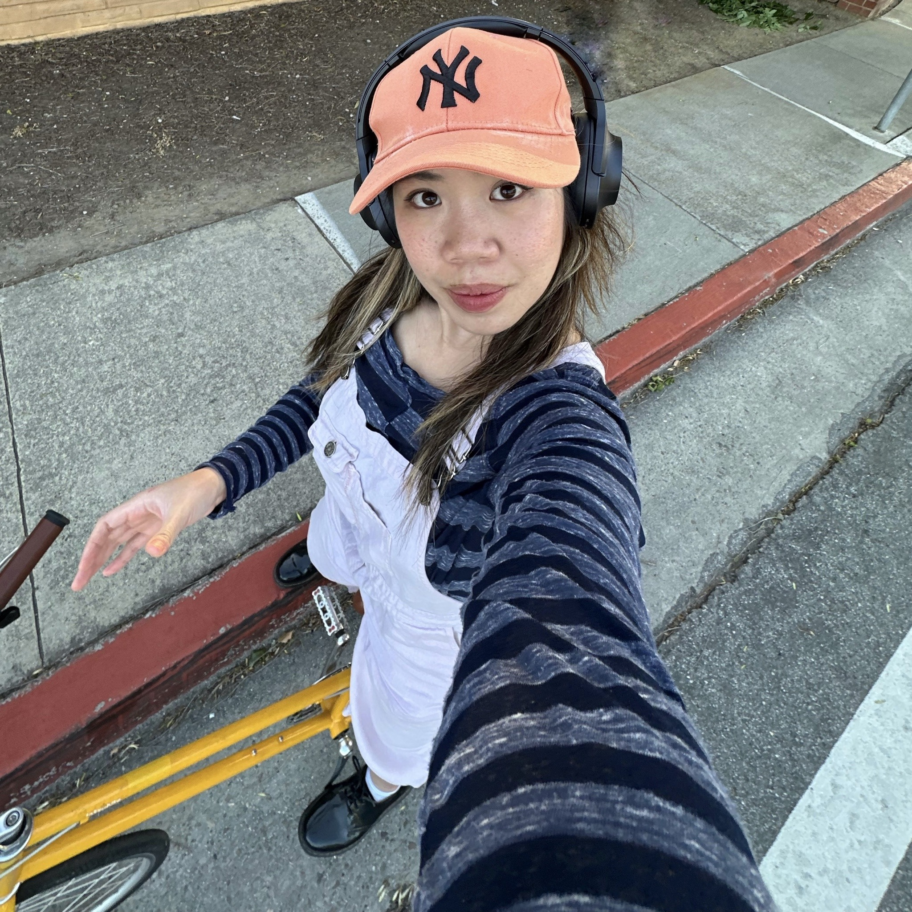

Caroline Le
About me
A most recent picture of myself. I went biking with my tokyobike which is my favorite mode of transportation, especially since the weather has been getting warmer in the Bay Area. Hi! My name is Caroline. I go by Carol too.
I'm a recent computer science graduate. I received my degree from UCSC in the spring of 2023. It's now 2024 and I'm seeking software development roles. Creating this website is an attempt to make myself visible and it's an intentional act of inviting myself to try something new.
Goals and Intentions
I have set two goals for myself this year: securing a successful job and relocating to New York.
I want to use this website as a sort of sketchbook for myself. I'd like to record my thoughts, experiment, and try out new things. I allow for it to continually evolve meaning that I allow for it to be messy, meticulous, and structured. It's ultimately for my own benefit. One These goals are quite ambitious (in my opinion). In pursuit of these goals, I am continuing to encounter challenges that are deeply personal: confronting myself, delving into my past, and reconciling with aspects of myself that stir up feelings of shame. These challenges have been central to my process of growth, however, because I have the opportunity to face my past mistakes head-on and embrace my own struggles. I hope to continue to grow, learn, and heal, ultimately encourage and reinforce my belief in myself. of the great things about webpages and technology in general is that it can continually be evolved. This website is a way for me to express myself; I give myself permission to explore, find my style, and develop as an individual and all other labels I identify as. It's an opportunity for me to enjoy the process of giving myself exposure. I'll practice to not worry too much.